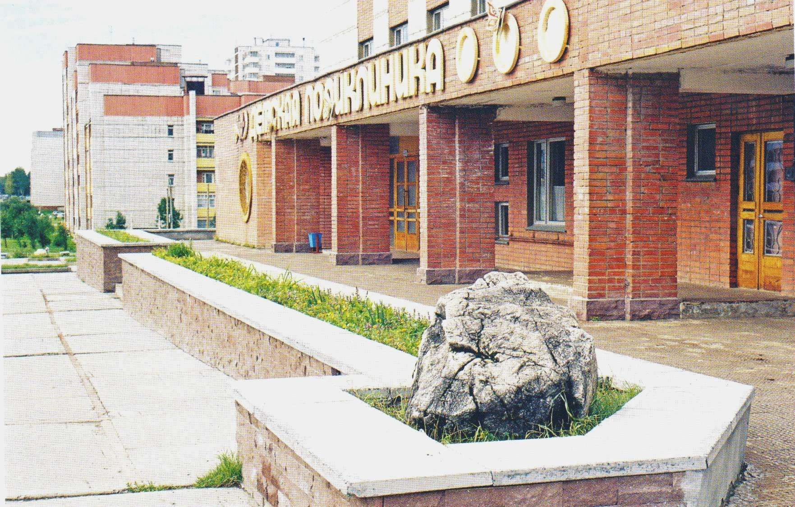

Детская поликлиника Google Maps
Главные три задачи - это оказание качественной медицинской помощи, повышение квалификации и профессиональный рост медицинских работников, внедрение новых технологий в клиническую практику.
Преимуществом нашего многопрофильного учреждения является возможность выполнить весь лечебно- диагностический процесс, сохраняя последовательность и преемственность в интересах пациента. Мы понимаем, как важно правильно организовать медицинскую помощь пациентам на всех этапах: скорую медицинскую помощь на дому, доставить пациента в больницу, на стационарном этапе предоставить специализированную помощь, на амбулаторном этапе- обеспечить динамическое наблюдение, разработать индивидуальные профилактические и реабилитационные программы.
Для пациента очень важно кто и как его лечит. В нашем учреждении серьезное внимание уделяется учебе кадров. Это- обучение и стажировка на клинических кафедрах, регулярные курсы повышения квалификации и собственная учебная программа для медицинского персонала, взаимодействие с ведущими кафедрами и специалистами.
В Федеральном государственном бюджетном учреждении здравоохранения "Центральная медико-санитарная часть № 91 Федерального медико-биологического агентства" освоены и внедрены в практику новейшие научно-технические достижения по приоритетным направлениям терапии, лучевой, ультразвуковой диагностики.
Наше учреждение сохраняет и приумножает лучшие традиции отечественной медицины, сочетает уважительное и заботливое отношение к пациенту. Врачи применяют уникальные методы лечения и новейшие технологии, что позволяет оказывать медицинскую помощь на достойном уровне по широкому спектру заболеваний.
Учреждение плодотворно сотрудничает с ведущими научными и медицинскими центрами и предприятиями. Граждане могут получить высококвалифицированную медицинскую помощь по индивидуальному договору или по программе добровольного медицинского страхования.